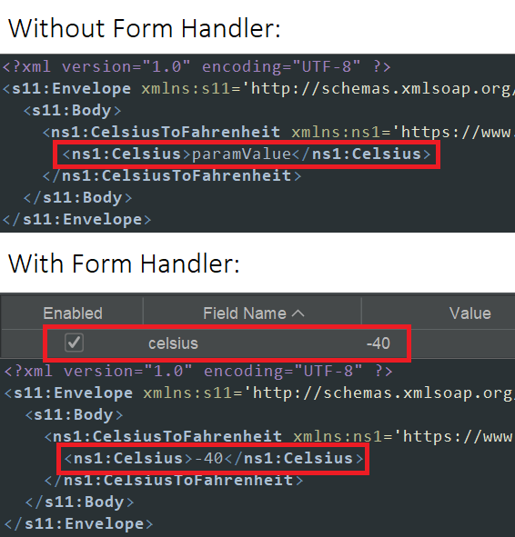

The add-on will automatically detect any SOAP definitions and spider them as long as they are in scope.
A menu item is added to the Import menu:
Import a WSDL File
Operations to import a WSDL file from the local filesystem or from a URL are also available via the API.
NOTE: As of version 6 of this add-on, only encoded URLs are supported.
Form Handler Add-on Support
The SOAP add-on supports overriding default parameter values based on field names via the Form Handler add-on.
For example,

Latest code: SOAP Support
Statistics
This add-on maintains the following statistics:
soap.urls.added: The total number of URLs (or SOAP Actions) added from imported WSDL files.